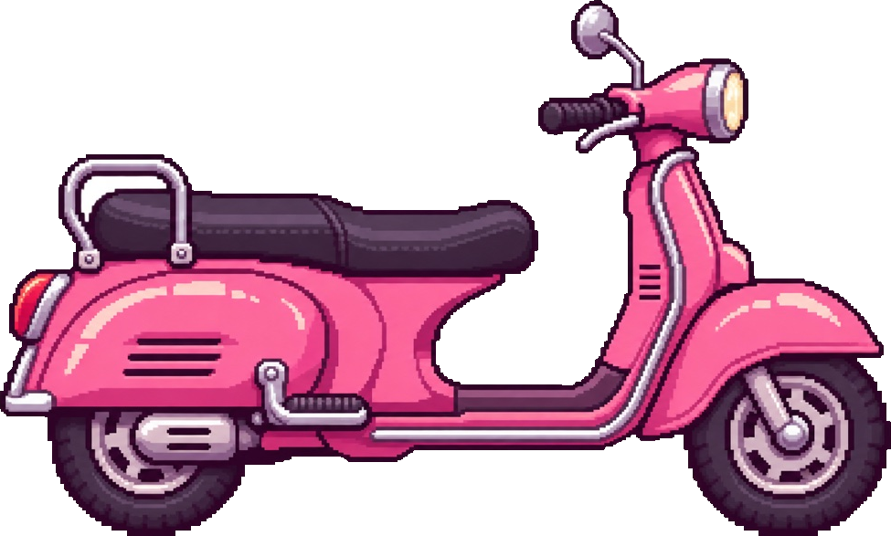
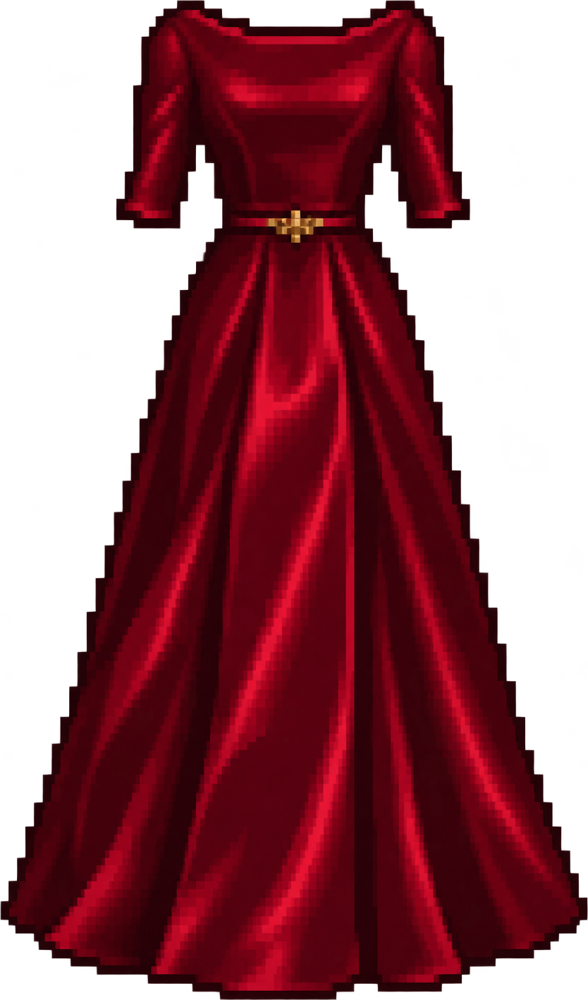
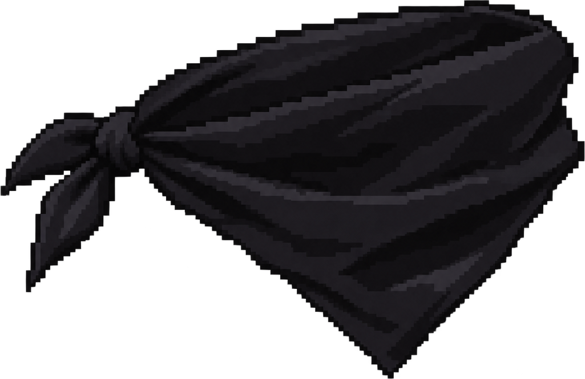

Lost Underground
Sylvia and Ray grew up below ground, in a city of old cellars and underground bars that never sees the sky. The surface is a dream they have only heard about, and getting out is too dangerous for anyone to try. Walk around with them and find the way out and up, together.





 "We should get better photos taken when we're out of the swamps..." — RayTap or press Esc to put it back
"We should get better photos taken when we're out of the swamps..." — RayTap or press Esc to put it back

How to play
Move Sylvia with A and D or the arrow keys to walk left and right, and W and S to walk her forward and back on the floor. Hold Space to walk faster. Click the mouse to attack, or press H. The map button at the top left, under the hearts, opens the world map with Sylvia's and Ray's heads pinned at where they are. Tap anywhere on the map to jump straight there, or tap outside it or press Esc to close it. When you open the game, a title screen lets you continue where you left off or start a new game. When several things are available at once, they show up as a list of buttons at the bottom right, so you can see them all and pick one, including everyone nearby to talk to. Pressing E does the first one in the list, and pressing T talks to the first person in the list. She turns away from you walking forward, and faces you walking back. You start in your chamber. Walk all the way to the right and you go to the bar, no need to press E. Walk up to Vicky behind the bar and press T to talk. Press H to attack, Ray will run over and fight with you. Ray follows you when you get far away and wanders the bar when you are close. Walk all the way to the left edge of the bar and you enter your chamber. You walk in from the right side. In the chamber, walk all the way to the right again to go back to the bar. Walk up to the bed in the chamber and press E to sleep under the covers and recover HP and energy. It asks you first: say yes and you wake up the next day, and the day count goes up by one. Say not yet and nothing happens. Ray climbs in with you. In the chamber, walk up to the framed photo on the nightstand beside the bed and press E and it pops up big, with the rest of the game blurred behind it. Tap it or press Esc to put it back. In the chamber, walk up to the makeup desk on the left wall and press E to look in the golden mirror. She blinks once in a while. Press M or tap Manifest and she shuts her eyes and says an affirmation, that her life is about to get better and she and Ray will get out of the sewers and live happily on land. Ray climbs out first and reaches back for her, and she climbs up to his hand. In the Shopping District, walk all the way to the left to climb back in the window. Walk up to the bar door with the beer mug and press E to go to the bar. Walk up to the repairs, clothing, Style Studio and arcade doors and press E to go inside. Walk all the way to the left inside a shop and you come back out to the street. Walk up to Char, Mikey or Gunner in their shops and press T to talk to them. They stop, show their talking pose and say something. Press T again for another line, or walk away or press Esc to end the chat. Gunner also sells a pink scooter for $20 in gold coins: while his talk bubble is open, tap Shop, then buy it. Beat dungeon monsters to earn coins. Once you own it, it always comes home: no matter where you leave it, every morning it is parked back at the Shopping District. Char sells fashion in the clothing store: a ruby red evening gown for Sylvia for 15 coins and a black bandana for Ray for 10 coins. While her talk bubble is open, tap Shop, then buy one. It goes on right away, and you can take it off and put it back on from the same panel. They layer, so she can wear the gown and he can wear the bandana at the same time. It parks outside at the entrance of the Shopping District street. Walk up to it and press E to ride it. It is faster than running, and the headlight lights the way ahead. You can ride it everywhere, and riding through the edge of a room carries it into the next room with you. Press E again to get off, and get off to climb stairs or go through a shop, bar, or iron door. In the arcade, walk up to Jamie, Kush or Lia and press T to talk to them too. They stop and say something, T for another line, Esc or walking away ends the chat. On the Shopping District street, walk up to Eve, Sylvia's best friend, and press T to talk. She is surprised and delighted to see Sylvia, then she tells a joke and laughs after it. T for another line, Esc or walking away ends the chat. Alexis, one of the wealthiest in the underground, also wanders the street and goes to the clothing store and the bar often, so you might find her in any of the three. Walk up to her and press T to talk. She is surprised to see Sylvia, then she says something cutting and laughs after it. And she lowkey wants to steal Ray. Priya, the gym girlie, runs around the Shopping District street and the Flooded Cistern, so you might find her in either one. Walk up to her and press T to talk. She is surprised to see Sylvia, then she shares a health tip and laughs after it. Diego, super flirty and popular but bros with Ray, is always in the bar, sometimes stepping out to the Shopping District street, so you might find him in either one. Walk up to him and press T to talk. He is surprised to see Sylvia, then he turns the charm right back on and laughs after it. Dr. Kian, a Persian hot doctor who cures people in the underground, is a gentle man and very pure hearted. He walks around the Shopping District street but is mostly in the bar, so you might find him in either one. Walk up to him and press T to talk. He is surprised to see Sylvia, then he is all warmth and care and laughs after it. Yuto, a Japanese sexy nerd that loves reading, is always teaching people something new and interesting facts. He is a bit cocky and egoistic, but in a hot way. He wanders the Shopping District street and the bar, so you might find him in either one. Walk up to him and press T to talk. He is surprised to see Sylvia, then he is all smug and ready to teach her something and laughs after it. Mayor Adler, the mayor of the whole underground city, is constantly in the bar and walks slow with his cane. He looks evil but he is actually a sweetheart, he just does not know how to speak. Walk up to him and press T to talk. He is surprised to see Sylvia, then he tries his best to sound official and laughs after it. Walk up to Ray anywhere and press T to talk to him. He is very protective and he will tell you so. When he speaks, four reply options appear around Sylvia's head, and they are different every time: one sweet, one teasing, one shy and one flirty line, picked fresh for each chat. Tap one, or press 1, 2, 3 or 4 on the keyboard, and Sylvia says that line. He answers her in that same tone, and after she speaks, if she was shy or flirty, he gets bashful and blushing. Press T for his next line, or walk away or press Esc to end the chat. Press I when there is something to inspect and they crouch down to look. At a dark arch in the arcade floor they crouch and look at the secret spot, press I again to jump down together to the Old Service Tunnels, or walk away to stand back up. The arches only open once you have played the minigame that hints at them. At a piece of junk on the floor they crouch down and read it, and what it says shows up in a frosted panel at the top of the screen, with the item itself shown big below the panel so you can see what you are reading about. Random junk is scattered around the deep underground: walk up to any of it and press E or I to inspect it. The papers can hint at the way up, or they can just be trash. Every room greets you with a little line at the top when you walk in, no box, just the words for a few seconds. The bar reeks of cheap beer, the subway is very dark and very quiet, the shopping district is beautiful but could be better. In the tunnels, walk all the way to the left and you go back home to your room. The rusted iron door leads to the Ancient Dungeon. The round blue tunnel mouth on the left side, right where you walk in, takes you to the Crystal Quarry. The stone arch doorway on the right of the Secret Garden is another way home. In the dungeon, walk all the way to the left and you come back to the tunnels. The big stone door on the far right of the dungeon leads deeper, to the Crypt, then the Cages, then the Court of Justice, and the same monsters live down there. To keep a save, tap Save to file on the title screen (or the little save button in the corner while you play) to download it, and Load from file to bring it back, even after a new game. The big stone door on the far right is for more dungeon levels later. The dungeon has four levels, and each level has its own monster: Bitey Rock in the graveyard, Candle Pup in the Crypt, Key Knight in the Cages, and Bell Ghost in the Court. Press H or click to kick, and Ray runs ahead of you to fight them himself the moment they show up. The deeper you go, the tougher they get: Bitey Rock takes 2 hits and drops 2 coins, Candle Pup takes 3 hits and drops 5, Key Knight takes 4 hits and drops 8, and Bell Ghost takes 5 hits and drops 15. Walk over the coins to pick them up, and your coin count shows beside the hearts at the top left. Careful: Bitey Rock costs you half a heart every 5 attacks, Candle Pup half a heart every 3, Key Knight half a heart every 2, and Bell Ghost a whole heart every 2. You have to clear every monster on a level before the way deeper opens up. At the very bottom, in the Court, a hooded stranger called X waits. Once every monster in the whole dungeon is cleared, he shows himself in a cutscene, and he is the one who unlocks the subway. Walk up to him and press T to talk. Kissing Ray with K restores one heart, if it has been a few seconds since the last one. If her health or her energy runs out, she collapses and Ray carries her home, and Dr. Kian is waiting in the chamber to tell her to rest before he walks out. Walk up to the stairs on the right side of the bar and press E to climb up to the Forgotten subway. The stairs stay sealed until the whole dungeon is cleared and X unlocks them. Walk up to the stairs on the right side of the subway and press E to climb up to Upper Level 1. The stairs stay sealed by a puzzle you have to solve first. Each Upper Level has stairs on the right that climb to the next one up: Upper Level 1 to Upper Level 2, Upper Level 2 to Upper Level 3. To come back down, walk all the way to the left edge of an Upper Level. From Upper Level 3, walk up the stairs on the right to climb to the Earthen Tunnel, a cramped dark tunnel, and from there all the way to the right again to reach the Surface, sunlight and open sky at last. You come out at the top of the stone steps. Walk all the way to the left on the Surface and you go back down into the tunnel. Walk all the way to the right on the Surface and Ray gets down on one knee and proposes. Press E or tap to go through the moment, he asks, she is surprised, she says yes, and it ends with a kiss. In the Shopping District, walk all the way to the right and you go to the Flooded Cistern. In the Flooded Cistern, walk all the way to the left and you go back to the street, or all the way to the right to reach the Secret Garden, a hidden garden blooming in the dark, once the Mayor has told you where it is on Day 3. In the Secret Garden, walk all the way to the left and you go back to the Flooded Cistern. The fountain in the garden is a wishing fountain: walk up to it and press E to make a wish, and 100 gold coins rise from it, one time only. Go back to it and it will offer you one secret, for 100 coins: one question, once ever, and you can walk away if you would rather keep your coins. A soft golden shimmer marks it. In the Crystal Quarry, Sylvia and Ray glow a soft blue light around them, but only in there. Every morning a fresh set of treasure chests appears around the Forgotten subway, the Crystal Quarry, the Secret Garden and the Old Service Tunnels, 0 to 2 in each place, some days none at all, with a soft golden shimmer. Walk up to one and press E to open it, and a random 3 to 20 gold coins spill out, once per chest per day. Mika lives in the Flooded Cistern, mostly sitting by the water. Walk up to her and press T to talk; she is warm, and she lights up when someone stops to say hi. The stone arch doorway on the right of the garden takes you back home: press E and they walk up into the open doorway together, backs to the camera, and arrive in your room. On touch, hold the left or right side of the bar to walk that way.
The story
Sylvia and Ray grew up below ground, in a city that never sees the sky. The surface is a dream they have only heard about, and getting out is too dangerous for anyone to try. They are going to try anyway. Find the way out and up, together, and see the sun for the first time.
Energy, days and saving
Sylvia has an energy bar beside the hearts, on the same top row. It drains slowly while she is awake, about 10 minutes to a full bar, and when it runs out she collapses and Ray carries her home, so get her to bed. Sleeping refills her energy and her health, and wakes her up the next day: the day count goes up by one every morning. Your progress saves on its own whenever you sleep, change rooms, buy the scooter, buy or wear fashion, make a wish, or finish the proposal. You can also save your progress as a file: on the title screen tap Save to file to download it, and Load from file to bring an old save back, even after you start a new game. There is a little save button in the corner while you play, too. When you open the game you can continue where you left off, or start a new game from Day 1.
Meet Sylvia and Ray
Sylvia is the main character. Ray is a head taller than her and just wanders the bar while she finds the way out.
Talk to Ray
Ray is very protective and very devoted to Sylvia. Walk up to him anywhere and press T to talk. He speaks first, then four reply options appear around Sylvia's head, and they are different every time: one sweet, one teasing, one shy and one flirty line, picked fresh for each chat. Tap one, or press 1, 2, 3 or 4, and Sylvia says that line. He answers her in that same tone, and he has a lot to say, so the same conversation almost never repeats. He shows his talking pose while you chat, arms crossed and serious, and after she speaks, if she was shy or flirty, he gets bashful and blushing. Press T for his next line, or walk away or press Esc to end the chat.
The bar
The bar under the ground, where Vicky pours drinks. The stairs on the right lead up to the Forgotten subway, once X has unlocked them. Their chamber is through the far left edge. On Day 3, walk in and the Mayor, drunk, will slip up about the hidden garden.
The golden mirror
The makeup desk in the chamber, with a golden arched mirror. She looks in it, blinks, and when she manifests she shuts her eyes and says her life is about to get better, and she and Ray will get out and live happily on land.
Junk on the floor
Random stuff is scattered around the deep underground: crumpled paper, old newspapers, takeout boxes, crushed cans, rusted valves, lanterns, keys, cassette tapes, mushrooms, crystals and more. Walk up to any of it and press E or I to inspect it. The papers can hint at the way up, or they can just be trash. The secret arches under the arcade floor have a faint golden shimmer now, so they are easier to find: walk up to one and press I to crouch down and look, then press I again to jump down to the Crystal Quarry.
The world map
A vast subterranean world of many levels, from the Crystal Quarry and the Old Service Tunnels below to the Upper Levels and the Surface far above. The map button at the top left, under the hearts, opens it with Sylvia's and Ray's heads pinned at their current room. Places you have not visited yet are blurred out on the map, except your room and the Shopping District, and each new place becomes clear once you have been there. Tap anywhere on the map to jump straight to the room nearest that spot.
The photo on the nightstand
A framed photo of Sylvia and Ray kissing in the ruins, on the nightstand beside the bed. Walk right up to it and press E and it pops up big, with the rest of the game blurred behind it. Ray says they should get better photos taken when they are out of the swamps. Tap it or press Esc to put it back.
The Forgotten subway
An abandoned station up the stairs from the bar, with a rusty old train. The stairs from the bar stay sealed until the whole dungeon is cleared and X unlocks them, and the stairs on the right only climb up to Upper Level 1 once you solve the puzzles down there.
Upper Level 1
A ghostly blue cavern with a great lantern tower and stone stairs on the right, up the stairs from the Forgotten subway. The stairs on the right climb to Upper Level 2. Walk all the way to the left to go back down to the subway.
Upper Level 2
A violet cavern path to the upper ruins, with glowing crystals and old stone arches. The stairs on the right climb to Upper Level 3. Walk all the way to the left to go back down to Upper Level 1.
Upper Level 3
A ghostly white cavern lost in fog, with pale ruins and crystal shards. The highest level so far, and the closest to the surface. Walk up the stairs on the right to climb to the Earthen Tunnel. Walk all the way to the left to go back down to Upper Level 2.
The Earthen Tunnel
A cramped, dark earthen tunnel past Upper Level 3, the last stretch before the outside. You climb up the stairs from Upper Level 3 into it. Walk all the way to the left to go back to Upper Level 3, or all the way to the right to reach the Surface.
The Proposal
When you have made it all the way out to the Surface, walk all the way to the right and Ray gets down on one knee. He has a ring and a question, and Sylvia is surprised, then very happy. Press E or tap to go through the moment, and it ends with a kiss.
The Surface
Sunlight, open sky, and the whole world waiting. A ruined terrace at sunrise, with a river valley and the mountains beyond. You come up the stone steps from the tunnel and out onto the terrace. You made it out. Walk all the way to the left to go back down into the Earthen Tunnel. Walk all the way to the right and Ray has a question for Sylvia. He slowly gets down on one knee, holds out the ring, she says yes, and they end in a hug.
The Crystal Quarry
A deep crystal cave, glowing purple and blue. In the quarry, Sylvia and Ray glow a soft blue light around them, but only in there. It is reached through the round blue tunnel mouth in the Old Service Tunnels. Walk all the way to the left to come back up to the arcade, or all the way to the right to go to the Old Service Tunnels.
The Old Service Tunnels
Damp old service tunnels under the arcade, with rusted pipes, dripping water and a locked iron door. Walk all the way to the left to go back home to your room. Go through the rusted iron door to reach the Ancient Dungeon. The round blue tunnel mouth on the left side, right where you walk in, takes you to the Crystal Quarry. The stone arch doorway on the right of the Secret Garden is another way home.
The Ancient Dungeon
A dry, shadowy dungeon past the tunnels, with chained gates, broken cells and a great cracked stone door. Walk all the way to the left to go back to the Old Service Tunnels. The big stone door on the far right leads deeper, down to the Crypt. Clear all four levels and X will show himself in the Court, and he is the one who unlocks the subway.
Monsters in the dungeon
One kind of cutie lives on each dungeon level. Level 1, the graveyard, has Bitey Rock, who bounces up and opens wide for a goofy chomp. Level 2, the Crypt, has Candle Pup, who squishes down and hops with her paws tucked. Level 3, the Cages, has Key Knight, who takes tiny steps and swings his oversized key. Level 4, the Court, has Bell Ghost, who bobs in the air while her bell rocks side to side. Press H or click to kick, and Ray runs ahead of you to fight them himself the moment they show up. The deeper you go, the tougher they get and the more coins they drop: Bitey Rock takes 2 hits and drops 2 coins, Candle Pup takes 3 hits and drops 5, Key Knight takes 4 hits and drops 8, and Bell Ghost takes 5 hits and drops 15. Walk over the coins to pick them up, and your coin count shows beside the hearts at the top left. Careful: Bitey Rock costs you half a heart every 5 attacks, Candle Pup half a heart every 3, Key Knight half a heart every 2, and Bell Ghost a whole heart every 2. You have to clear every monster on a level before the way deeper opens up. And kissing Ray with K restores one heart, if it has been a few seconds since the last one.
If she collapses
If Sylvia runs out of health or energy, she faints, Ray catches her and carries her all the way home. She wakes up in the chamber with full health and energy, and Dr. Kian is there to tell her Ray carried her home, that she needs real rest, and to be careful down there. Then he walks out.
Deeper dungeon levels
Past the big stone door in the Ancient Dungeon, the dungeon keeps going down. First the Crypt, with tombs and candles, where Candle Pup lives. Then the Cages, where cages hang from the ceiling, where Key Knight lives. And at the very bottom, the Court of Justice, a ruined courtroom where Justice is blind but still watching, where Bell Ghost lives. Each level has its own monster, tougher and richer than the one above, so bring your best kick.
X, the hooded stranger
At the very bottom of the dungeon, in the Court of Justice, someone waits. A hooded stranger in a long black coat. Nobody has ever seen him before. He does not say much, but he seems to know a lot of secrets, of the underworld and of the land above, and nobody knows how old he is. He only shows himself once every monster in the whole dungeon is cleared, in a cutscene where Sylvia and Ray are both shocked to see him. He says he sees great potential in them, and he is the one who unlocks the subway, hinting that the bar leads to it. He does not know their names. Walk up to him and press T to talk, if you dare.
Treasure chests
Wooden chests with gold bands appear around the Forgotten subway, the Crystal Quarry, the Secret Garden and the Old Service Tunnels, with a soft golden shimmer. Every morning a fresh set appears, 0 to 2 in each place, some days none at all. Walk up to one and press E to open it: the lid rises and a random 3 to 20 gold coins spill out. Each chest opens once per day, and today's chests save with your game.
The Flooded Cistern
An ancient flooded waterworks under the ground, with a great waterwheel, rusted pipes and a stone walkway over dark water. It sits to the right of the Shopping District.
Mika
A warm Filipina girl who lives in the Flooded Cistern, sitting by the water almost all the time. She is poor and has no friends, but she has a warm smile and two good ears, both free. Walk up to her and press T to talk; she stands up to greet you, surprised anyone stopped, then delighted someone is listening.
The Secret Garden
A hidden garden blooming in the dark, with wisteria, a fountain, statues and a pond full of lilies. It sits beside the Flooded Cistern, to its right, but the way stays shut until the Mayor tells them where it is: on Day 3, walk into the bar and he will slip up, drunk, about the garden past the water. Walk all the way to the right in the cistern to reach it, and all the way to the left to go back. The fountain is a wishing fountain: press E to make a wish and 100 gold coins rise from it, one time only. Go back to it and it will offer you one secret, for 100 coins: one question, once ever. The stone arch doorway on the right takes you back home: press E and they walk up into the open doorway together, backs to the camera, and arrive in your room.
The Shopping District
A neon canal street under the ground, with a repairs shop, a clothing store, a style studio and an arcade. Climb out of the chamber window to get there. The bar door with the beer mug leads to the bar. Eve, Sylvia's best friend and Char's granddaughter, wanders the street in her silver dress. Walk all the way to the right to reach the Flooded Cistern. Once you buy Gunner's pink scooter, it is parked outside at the entrance of the street, on the left side.
The shops
The repair shop, the clothing store, the Style Studio salon and the arcade all open off the Shopping District street. Walk up to a door and press E to go in, and walk all the way to the left inside to come back out.
The arcade kids
Three regulars who stay in the arcade, wandering between the machines: Jamie with her handheld game and yellow backpack, Kush with his dino plush, and Lia with her cup and varsity jacket. Walk up to one and press T to talk. Kush loves the underground but is curious about the land, Lia is just happy to have her friends and her snacks, and Jamie is very pessimistic about the whole thing and does not really care.
Eve, Sylvia's best friend
Eve is Sylvia's best friend and Char's dear granddaughter. She wanders the Shopping District street in her silver dress, fun and bubbly and always uplifting. Walk up to her and press T to talk. She is surprised and delighted to see Sylvia, then she tells a joke and laughs after it. Press T again for another line, or walk away or press Esc to end the chat.
Alexis, the richest in the underground
Alexis is one of the wealthiest people in the underground, very spoiled and very bitchy, in her brown silk gown and fur stole. She wanders the Shopping District street and goes to the clothing store and the bar often, so you might find her in any of the three. Walk up to her and press T to talk. She is surprised to see Sylvia, then she says something cutting and laughs after it. And she lowkey wants to steal Ray. Press T again for another line, or walk away or press Esc to end the chat.
Priya, the gym girlie
Priya is an Indian gym girlie, always running and staying fit, very cool and admirable and sweet. She runs around the Shopping District street and the Flooded Cistern, so you might find her in either one. She loves giving health advice and tips for staying healthy even in the underground. Walk up to her and press T to talk. She is surprised to see Sylvia, then she shares a tip and laughs after it. Press T again for another line, or walk away or press Esc to end the chat.
Diego, the flirt
Diego is Mexican, super flirty and popular, but bros with Ray. He is always in the bar, sometimes stepping out to the Shopping District street, so you might find him in either one. Walk up to him and press T to talk. He is surprised to see Sylvia, then he turns the charm right back on and laughs after it. He flirts with everyone, but he would never cross Ray. Press T again for another line, or walk away or press Esc to end the chat.
Dr. Kian, the doctor
Dr. Kian is a Persian hot doctor who cures people in the underground. He is a gentle man and very pure hearted. He walks around the Shopping District street but is mostly in the bar, so you might find him in either one. Walk up to him and press T to talk. He is surprised to see Sylvia, then he is all warmth and care and laughs after it. If you or Ray ever feel unwell, come to him. Press T again for another line, or walk away or press Esc to end the chat.
Yuto, the sexy nerd
Yuto is a Japanese sexy nerd that loves reading. He is always teaching people something new and interesting facts. He is a bit cocky and egoistic, but in a hot way. He wanders the Shopping District street and the bar, so you might find him in either one. Walk up to him and press T to talk. He is surprised to see Sylvia, then he is all smug and ready to teach her something and laughs after it. Press T again for another line, or walk away or press Esc to end the chat.
Mayor Adler, mayor of the underground city
Mayor Adler is the mayor of the whole underground city. He looks evil but he is actually a sweetheart, he just does not know how to speak. He is trying his best. He is constantly in the bar and walks slow with his cane. On Day 3, walk into the bar and he will be drunk, and he will slip up and tell Sylvia and Ray where the hidden garden is. Walk up to him and press T to talk. He is surprised to see Sylvia, then he tries his best to sound official and laughs after it. Press T again for another line, or walk away or press Esc to end the chat.
Char, the clothing store owner
Char runs the clothing store and only ever stands and walks in there. She wanders the racks, pausing to look at the clothes. A fashion diva with a fur coat and a cigar. Walk up to her and press T to talk. She also sells fashion: a ruby red evening gown for Sylvia and a black bandana for Ray, bought with gold coins. While her talk bubble is open, tap Shop.
Mikey, the salon owner
Mikey runs the Style Studio salon and only ever stands and walks in there. He wanders the chairs, pausing by the mirrors. Fun, loud and obsessed with hair. Walk up to him and press T to talk.
Gunner, the repair shop owner
Gunner runs the repair shop and only ever stands and walks in there. He wanders the workbench, pausing by the tools. Warm and handy, he keeps the whole district running. Walk up to him and press T to talk. He also sells a pink scooter for $20 in gold coins: talk to him, tap Shop, and buy it. It parks outside at the entrance of the Shopping District street.
The pink scooter
Gunner sells a pink scooter in his repair shop for $20 in gold coins. Talk to him and tap Shop to buy it. Once you own it, it is parked outside at the entrance of the Shopping District street, and every morning it is parked back there again, no matter where you left it. Walk up to it and press E to ride it. It is faster than running, and the headlight throws a soft light ahead. You can ride it everywhere, and riding through the edge of a room carries it into the next room with you. Press E again to get off, and get off to climb stairs or go through a shop, bar, or iron door.
Beat your best
Your best score for Lost Underground is saved in this browser.